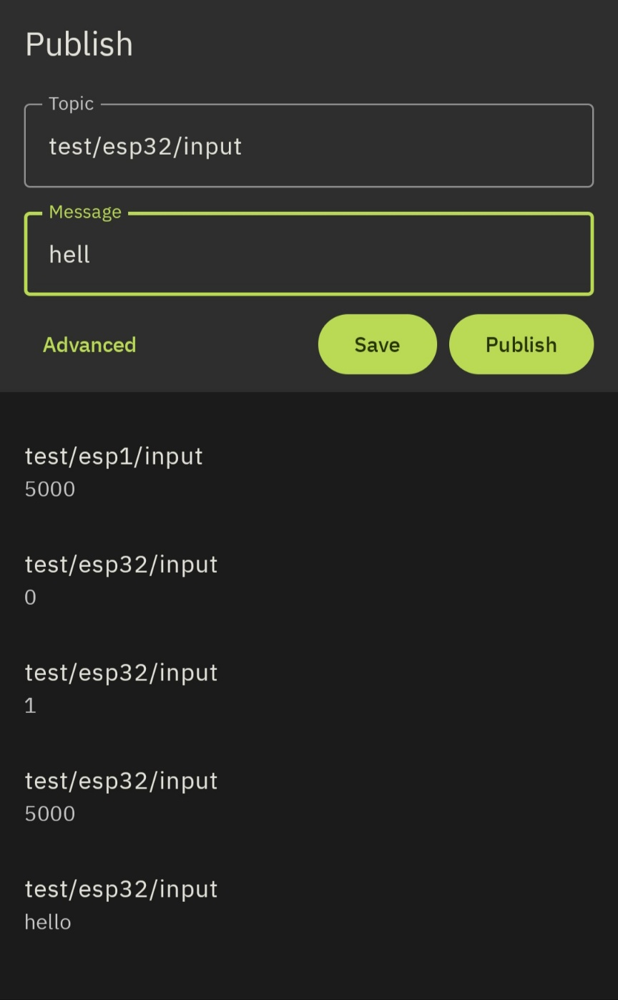
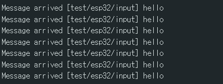
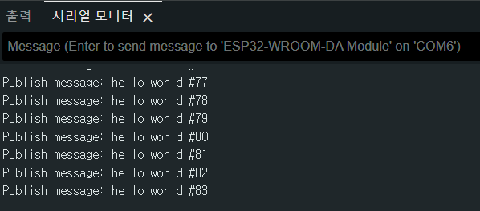
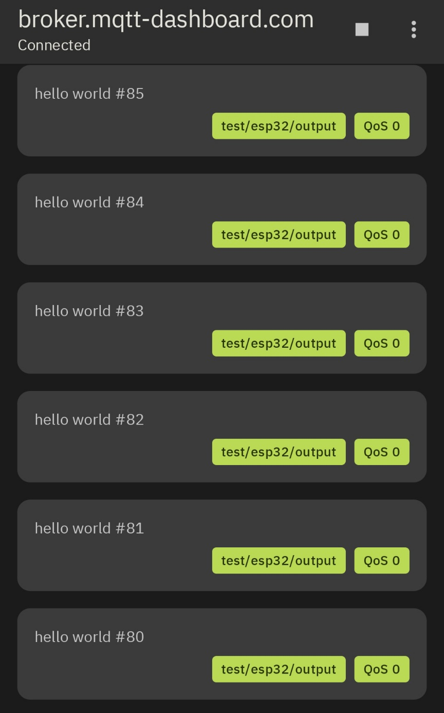

MQTT 1 문제
코드 설명:
- ssid와 password: ESP32가 MQTT 서버에 연결되어 메시지를 주고받는 기본적인 예제입니다.
- mqtt_server: MQTT 브로커의 주소로 여기서는 broker.mqtt-dashboard.com이라는 공개 MQTT 브로커를 사용합니다. 메시지를 주고 받을때 발신지와 목적지를 이어주는 서버의 역할을 한다.
- PubSubClient client(espClient): MQTT 클라이언트를 설정하며, espClient를 통해 네트워크 연결을 처리하고 이를 이용하기 위해서는 Arduino의 PubSubClient 라이브러리를 설치할 필요가 있다.
- MQTT callback 함수: 특정 토픽에서 수신된 메시지(payload)를 처리하며 수신된 메시지를 시리얼 모니터에 출력한다.
- MQTT reconnect 함수: 이 함수는 MQTT 브로커에 연결을 시도하며 연결이 성공하면 특정 토픽(test/esp32/input)을 구독합니다.
- 2초마다 "hello world" 메시지를 생성하여 MQTT 브로커에 발행하여 지속적으로 연결 상황을 확인한다.
- 이를 위해 스마트폰에서 MyMQTT이라는 어플을 설치하여 스마트폰과 ESP32의 MQTT 프로토콜을 통해 메시지를 주고받을 수 있다.



